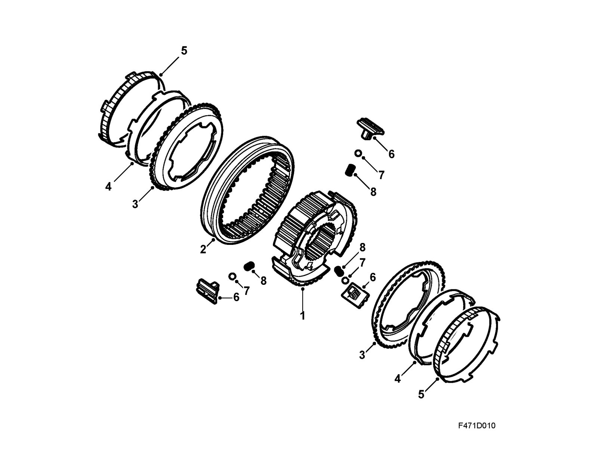
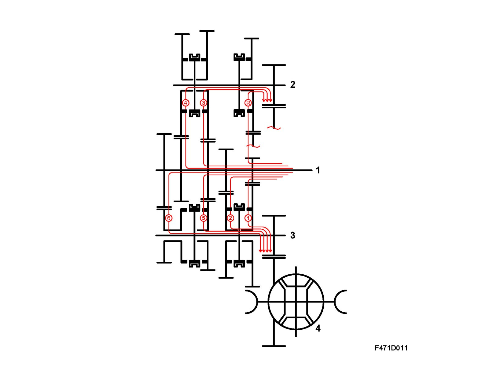

Detailed Description
Detailed description
The manual 6-speed gearbox has synchromesh on all gears, including reverse. To improve synchronization, the synchromesh hub for first/second has three cones, for third/fourth and reverse a double cone, and for fifth/sixth a single cone.
The gearbox has two output shafts. The lower shaft transfers power for first, second, fifth, sixth and reverse gears. The upper output shaft transfers power for third, fourth and reverse gears. This means that both intermediate shafts have a pinion gear that is constantly meshed with the crown wheel.

Synchromesh hub 1/2
1. Hub
2. Synchromesh sleeve
3. Outer synchromesh cone
4. Intermediate synchromesh cone
5. Inner synchromesh cone
6. Catch
7. Ball
8. Spring
If first or second gear is engaged, the sleeve pulls the catches slightly, which then start to bear against the outer balk ring. This produces a presynchronization that is advantageous for the continued synchronization/shifting. In this position, the ball is pressed down against the sleeve. The ball does not reach a new recess in the sleeve, rather the forces required to keep the gear engaged primarily come from segments in the gear selector mechanism. This function can be found in all synchromesh hubs.
Note
When counting the synchromesh cones, start from the shaft.
The design of the gearbox, with double intermediate shafts means that the gearbox is short, compact and very torsionally stiff. The gearbox is designed to be able to continuously transfer 400 Nm of torque.
Take note that the gears on the input shaft are called pinions (driving) while the gears on the output shaft are called gear wheels (are driven).
The input and output shafts and differential have been mounted with taper roller bearings to achieve maximum rigidity in the shafts under load. Shims must only be added to the bearings/shafts under the outer ring in the gearcase, not in the clutch housing. Shims are available in thicknesses of 0.8-2.3 mm in 5/100 mm intervals. The power from the engine is transferred directly to the input shaft. The way in which the gearbox works is shown by the diagram.

1. Input shaft
2. Upper output shaft
3. Lower output shaft
4. Differential
Power transmission, 1st gear: When the car is driven in 1st gear, power is transmitted via the 1st gear pinion, fixed on the input shaft, to output shaft no. 1 when the 1st gear wheel is locked to the output shaft no. 1, on which it is journalled, by the 1st/2nd synchromesh sleeve.
Power transmission, 2nd gear: When the car is driven in 2nd gear, power is transmitted via the 2nd gear pinion, fixed on the input shaft, to output shaft no. 1 when the 2nd gear wheel is locked to the output shaft no. 1, on which it is journalled, by the 1st/2nd synchromesh sleeve.
Power transmission, 3rd gear: When the car is driven in 3rd gear, power is transmitted via the 3rd/5th gear pinion, which is pressed over a splined joint on the input shaft, to output shaft no. 2 when the 3rd gear wheel is locked to the output shaft no. 2, on which it is journalled, by the 3rd/4th synchromesh sleeve.
Power transmission, 4th gear: When the car is driven in 4th gear, power is transmitted via the 4th gear pinion, which is pressed over a splined joint on the input shaft, to output shaft no. 2 when the 4th gear wheel is locked to the output shaft no. 2, on which it is journalled, by the 3rd/4th synchromesh sleeve.
Power transmission, 5th gear: When the car is driven in 5th gear, power is transmitted via the 5th/3rd gear pinion, which is pressed over a splined joint on the input shaft, to output shaft no. 1 when the 5th gear wheel is locked to the output shaft no. 1, on which it is journalled, by the 5th/6th synchromesh sleeve.
Power transmission, 6th gear: When the car is driven in 6th gear, power is transmitted via the 6th gear pinion, which is pressed over a splined joint on the input shaft, to output shaft no. 1 when the 6th gear wheel is locked to the output shaft no. 1, on which it is journalled, by the 5th/6th synchromesh sleeve.
Power transmission, reverse:
When driving in reverse gear, the power is transmitted from the 1st gear pinion on the input shaft to the 1st gear wheel on the lower output shaft. This is in constant mesh with the reverse gear wheel that is journalled on the upper output shaft. When the reverse gear sleeve locks the reverse gear wheel to the output shaft, reverse is achieved with the first gear wheel acting as an idler gear.